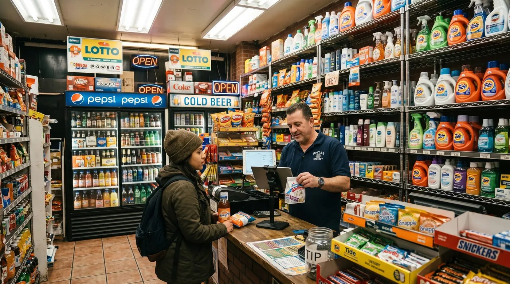

Logiciel de caisse pour épicerie : comment bien choisir en 2026
Une épicerie, une supérette ou un commerce de proximité, ce n'est pas une boutique de prêt-à-porter. Vous jonglez avec des centaines de références, des produits au poids, des dates limites de consommation, des fournisseurs multiples et, très souvent, l'ardoise du client du quartier. Votre logiciel de caisse doit suivre ce rythme. Voici comment choisir le bon outil en 2026, sans vous tromper ni vous ruiner.

Les besoins spécifiques d'une épicerie
Avant de comparer les marques, posons le décor. Une caisse d'épicerie doit gérer des contraintes que les commerces classiques n'ont pas. Si l'un de ces points est mal couvert, vous le paierez en temps perdu à chaque journée.
Deux lectures utiles pour prolonger celle-ci : frais cachés d'un logiciel de caisse et logiciels de caisse gratuits. Sur un sujet voisin, gérer ses stocks en petit commerce. Et sur les écarts qui ne s'expliquent pas par la casse : le vol du gérant, et pourquoi on le voit trop tard.
Le scan des codes-barres
Avec des centaines, voire des milliers de références, saisir les prix à la main n'est pas envisageable. Un bon logiciel lit le code-barres en une fraction de seconde, affiche le produit, applique le prix et met à jour le stock automatiquement. C'est le socle de la rapidité en caisse aux heures de pointe.
La gestion fine des stocks et le réassort
En épicerie, la marge se joue sur le stock. Trop de marchandise et vous immobilisez de la trésorerie (et vous jetez des produits périmés) ; pas assez et vous perdez des ventes. Le logiciel doit suivre l'inventaire en temps réel, déclencher des alertes de réassort dès qu'un produit passe sous un seuil défini, et idéalement préparer vos commandes fournisseurs.
La vente au poids et la balance
Fruits et légumes, vrac, fromage à la coupe, charcuterie : une part de votre chiffre se vend au kilo. Il faut donc une balance connectée à la caisse. Le principe est simple : vous posez l'article, la balance transmet le poids, et le logiciel calcule le prix selon le tarif au kilo enregistré dans la fiche produit. Sans cette intégration, vous perdez du temps et vous multipliez les erreurs.
Les dates limites (DLC) et les produits frais
Gérer les DLC évite les invendus et les contrôles désagréables. Les caisses pensées pour l'alimentaire permettent de suivre les dates limites de consommation, de repérer les lots qui approchent de la péremption et de gérer les démarques sur les produits frais.
L'ardoise et le crédit client
C'est la spécificité la plus sous-estimée du commerce de proximité. Dans une épicerie de quartier, le crédit client, l'« ardoise », fait partie de la relation : le voisin qui « passera payer en fin de semaine », le client régulier qui cumule ses achats. Géré sur un cahier, c'est une source d'erreurs et d'oublis. Une caisse moderne propose un compte client qui enregistre les achats à crédit et solde le compte au paiement. Vous gardez une trace claire, sans tension ni mauvaise surprise.
Les fournisseurs et le multi-rayons
Épicerie sèche, frais, boissons, droguerie, presse… Une supérette est un commerce multi-rayons, souvent avec plusieurs fournisseurs par catégorie. Le logiciel doit organiser le catalogue par familles, suivre les achats par fournisseur et faciliter les réceptions de marchandises.
Comment choisir : les critères qui comptent
Une fois les besoins métier posés, quelques critères transversaux font la différence entre une caisse qui vous aide et une caisse qui vous freine :
- La conformité NF525 : non négociable dès que vous encaissez des particuliers (voir plus bas).
- Le mode hors ligne : votre épicerie ne doit jamais s'arrêter parce qu'Internet est tombé. Une vraie caisse continue d'encaisser et se synchronise au retour du réseau.
- Le matériel compatible : lecteur de code-barres, balance, tiroir-caisse, imprimante à tickets, terminal de paiement. Évitez les solutions qui imposent leur propre matériel coûteux.
- La tarification claire : méfiez-vous des commissions sur chaque paiement par carte et des modules « indispensables » facturés à part.
- L'évolutivité : vous devez pouvoir activer un module (fidélité, e-commerce, second poste) quand le besoin arrive, pas avant.
- Le support et les mises à jour réglementaires : la réglementation bouge. Choisissez un éditeur qui suit.
Notre recommandation
digabloPos
digabloPos coche les cases qui comptent vraiment pour une épicerie ou une supérette. Le plan de base est gratuit à vie (sans date limite, sans carte bancaire), il gère le scan des codes-barres et le suivi des stocks avec réassort, fonctionne en mode hors ligne avec synchronisation automatique, et s'enrichit de modules à la carte que l'on n'active qu'au besoin. Surtout, il intègre la gestion des ardoises / crédit client, l'outil dont rêvent les commerces de proximité, et il est certifié NF525 et prêt pour la facturation électronique.
👍 Points forts
- Gratuit à vie, sans engagement
- Gestion des stocks et scan code-barres
- Mode hors ligne avec synchronisation
- Modules à la carte, on ne paie que l'utile
- Gestion des ardoises / crédit client (idéal en proximité)
- Certifiée NF525
- Prête pour la facturation électronique
👎 À noter
- Marque plus récente que les éditeurs historiques
- Certains modules avancés sont payants
D'autres solutions du marché sont solides, Devance, Crisalid, Clyo Systems, Loyverse ou Shopcaisse reviennent souvent pour l'alimentaire. Mais beaucoup facturent à l'abonnement, imposent leur matériel ou réservent l'ardoise et le hors ligne à des offres supérieures. Pour une épicerie qui veut démarrer proprement sans exploser son budget, le rapport fonctions / coût de digabloPos est difficile à battre.
Envie de tester sur votre propre catalogue ?
Le plan de base est gratuit à vie, prêt en quelques minutes, sans carte bancaire. Importez vos produits, branchez votre lecteur de code-barres, et encaissez.
Essayer digabloPos gratuitementTableau des fonctions clés pour une épicerie
| Fonction | Pourquoi c'est important en épicerie | Disponible sur digabloPos |
|---|---|---|
| Scan code-barres | Encaissement rapide sur des centaines de références | Oui |
| Gestion des stocks & réassort | Évite ruptures et invendus, prépare les commandes | Oui |
| Vente au poids (balance) | Fruits, légumes, vrac, coupe | Oui* |
| Suivi des DLC / produits frais | Limite les pertes sur le frais | Oui* |
| Ardoise / crédit client | Cœur de la relation en proximité | Oui |
| Mode hors ligne | La caisse ne s'arrête jamais | Oui |
| Conformité NF525 | Obligation légale | Oui |
| Facturation électronique | Réforme en cours de déploiement | Prête |
*Selon le matériel connecté et les modules activés. Les fonctionnalités évoluent : vérifiez toujours le périmètre exact et la compatibilité matérielle sur le site officiel de l'éditeur avant de choisir.
Combien ça coûte vraiment
Le prix affiché ne dit pas tout. Pour une épicerie, additionnez sur 12 mois les postes suivants :
- Le logiciel : de 0 € (plan gratuit) à plusieurs dizaines d'euros par mois et par poste selon les éditeurs.
- Les modules : stocks avancés, fidélité, multi-magasin… vérifiez ce qui est inclus et ce qui est en option.
- Le matériel : lecteur de code-barres, balance connectée, tiroir-caisse, imprimante à tickets, éventuellement une tablette. À acheter une fois, mais à budgéter.
- Les commissions sur paiement : certaines solutions prélèvent un pourcentage sur chaque encaissement par carte. Sur un volume d'épicerie, cela peut représenter un coût récurrent significatif.
La bonne question n'est pas « combien coûte la caisse ? » mais « combien me coûte-t-elle réellement sur un an, commissions et modules compris ? ». Un logiciel gratuit à vie, sans commission imposée, avec du matériel libre, part avec une longueur d'avance.
NF525 et facturation électronique
Deux sujets de conformité concernent directement les épiceries en 2026. Mieux vaut les anticiper que les subir.
La certification NF525
Depuis la loi anti-fraude à la TVA, un commerçant assujetti qui encaisse des particuliers doit utiliser un logiciel de caisse certifié. La norme garantit l'inaltérabilité, la sécurisation, la conservation et l'archivage des données de vente. La certification NF525 (ou une attestation individuelle de l'éditeur) prouve cette conformité. En cas de contrôle, vous devez pouvoir présenter ce justificatif : exigez-le avant de choisir, et vérifiez qu'il porte bien sur la version que vous utilisez.
La facturation électronique
La réforme de la facturation électronique se déploie progressivement et concerne aussi les commerces de proximité. Pour une épicerie qui vend surtout à des particuliers, l'enjeu porte principalement sur la transmission des données de vente (e-reporting) plutôt que sur l'émission de factures unitaires. Le calendrier s'étale selon la taille de l'entreprise. L'essentiel : choisir dès maintenant une caisse prête pour la facturation électronique, pour ne pas avoir à tout rechanger en urgence.
Questions fréquentes
Quel logiciel de caisse choisir pour une épicerie ?
Privilégiez une caisse certifiée NF525 qui gère le scan des codes-barres, le suivi des stocks avec alertes de réassort, la vente au poids via balance connectée, les DLC et le crédit client (ardoise). En proximité, l'ardoise et le mode hors ligne font souvent la différence au quotidien.
Un logiciel de caisse d'épicerie doit-il être certifié NF525 ?
Oui. Dès lors que vous encaissez des particuliers en tant qu'assujetti, vous devez utiliser un logiciel de caisse certifié garantissant l'inaltérabilité, la sécurisation, la conservation et l'archivage des données. La certification NF525 atteste de cette conformité.
Comment gérer la vente au poids sur une caisse d'épicerie ?
Il faut une balance connectée à la caisse. Vous posez le produit (fruits, légumes, vrac, fromage à la coupe), la balance transmet le poids au logiciel, qui calcule automatiquement le prix selon le tarif au kilo enregistré dans la fiche produit.
Peut-on gérer l'ardoise et le crédit client avec un logiciel de caisse ?
Oui, avec une caisse qui propose un module de crédit client. Vous ouvrez un compte par client, vous y ajoutez les achats à régler plus tard, puis vous encaissez le solde quand le client revient. C'est l'ardoise en version numérique, sans risque d'erreur ni de cahier perdu.
Prêt à équiper votre épicerie ?
Stocks, code-barres, ardoise client, mode hors ligne et conformité NF525 : installez votre caisse gratuite en quelques minutes, sans engagement ni carte bancaire.
Créer ma caisse gratuiteSources officielles
Les tarifs et les fonctions bougent souvent. Voici la documentation des éditeurs cités, pour vérifier par vous-même.
- Centre d'aide Loyverse : ce que l'éditeur documente lui-même sur ses fonctions et ses tarifs.